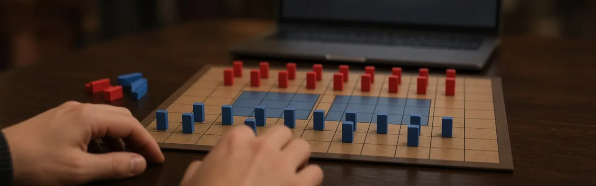
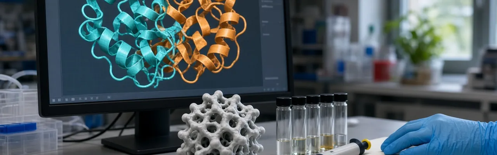
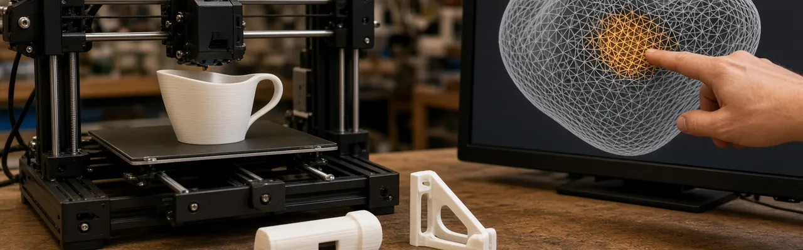

Stratego skjuler så mange mulige plasseringer av motstanderens brikker (over 10^66 av dem) at spillet har stått imot de overmenneskelige AI-resultatene sjakk og Go fikk for lenge siden. Ataraxos, bygget av MIT-forskere og samarbeidspartnere, kombinerer selvspill-forsterkningslæring med en modell som anslår hvor motstanderens skjulte brikker befinner seg. I en fagfellevurdert studie publisert i Nature 30. september slo den verdens høyest rangerte spiller 15 kamper mot 1, med 4 remiser, etter trening i omtrent en uke på 16 GPU-er: rundt en femhundredel av regnekraften et tidligere DeepMind-system trengte for et lignende resultat.
Kilde: news.mit.edu →
AI-verktøy for proteindesign kan nå lage sekvenser som ikke ligner noe som finnes i naturen fra før, noe som gjør det vanskeligere for sikkerhetsscreening å sammenligne et nytt design med kjente trusler. SynthID Bio, beskrevet i en fagfellevurdert Nature-artikkel publisert 30. september, legger et usynlig, verifiserbart signatur rett inn i proteinets aminosyresekvens eller forutsagte 3D-struktur. I laboratorietester på tre ulike proteinmål matchet de vannmerkede designene bindingsstyrken, treffraten og den naturlige variasjonen til designene uten vannmerke, slik at screeningverktøy får et opprinnelsesspor å sjekke.
Kilde: blog.google →
Generativ AI kan skissere hvordan en gjenstand skal se ut, uten å forstå hvordan den skal fungere, noe som ofte gir et design som er for skjørt, eller rett og slett ødelagt, til å 3D-printes. InstructMesh, bygget av forskere ved MIT CSAIL, Google og Northeastern og lansert 1. oktober, lar brukeren markere den problematiske delen av en AI-generert modell, beskrive feilen med vanlig språk, og få en lokal, printbar løsning, uten behov for erfaring med 3D-modellering. Teamet brukte det til å printe fungerende husholdningsgjenstander, blant annet en kneskinne og en fløyte som faktisk lager lyd.
Kilde: news.mit.edu →